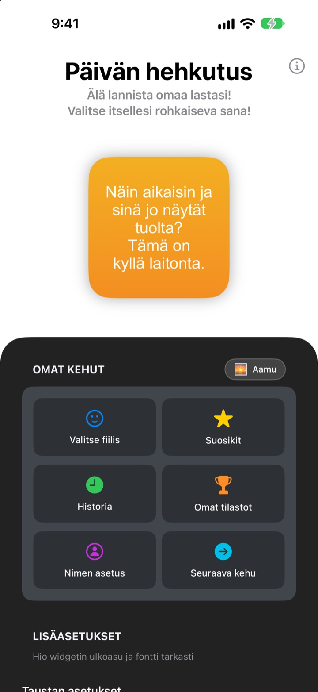
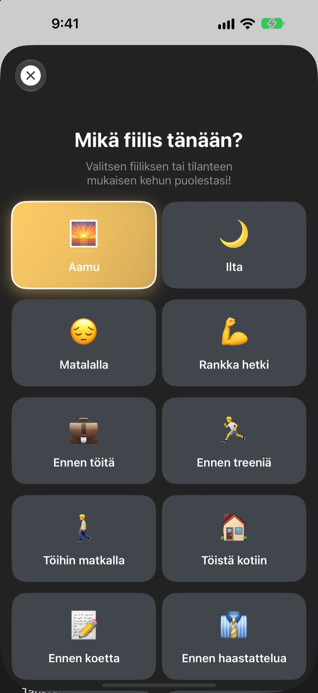
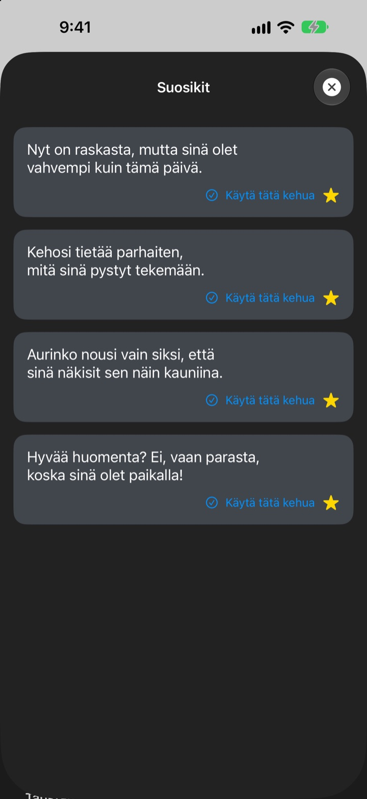
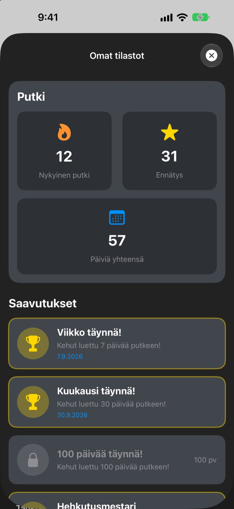

Aina kun otat puhelimen käteen,
suurin fanisi odottaa
Päivän hehkutus on widget, joka kehuu sinua tahallaan aivan liikaa. Aamulla aamukehu, ennen haastattelua haastattelukehu. Fontin, värit ja taustan valitset itse.
Yksi ostos ja kaikki on käytössä. Ei tilausta, ei mainoksia.

Ota kehu vastaan heti
Valitse fiilis, niin widget näyttää siihen sopivan kehun. Napauta Seuraava kehu, niin saat satunnaisen kaikista 281:stä.
Kuka on ankarin arvostelijasi? Sinäkö itse?
Töihin mennessä, ennen haastattelua, kotimatkalla pään sisäinen ääni lähinnä nalkuttaa. Päivän hehkutus asettuu puolellesi Koti-valikosta monta kertaa päivässä, vähän enemmän kuin olisi kohtuullista. Kun huomaat hymyileväsi, itseluottamustakin palaa vähän.
Kehu fiiliksen mukaan
Valitse 14 fiiliksestä ja tilanteesta, kuten Aamu, Töihin matkalla, Rankka hetki, Ennen haastattelua tai Ennen treffejä, niin sopiva kehu ilmestyy heti widgetiin. Etkö osaa päättää? Valittavana on myös Satunnainen.

Säästä suosikit
Napauta tähteä tallentaaksesi kehun Suosikkeihin ja selaa aiempia Historiasta. Napauta Käytä tätä kehua, niin se siirtyy suoraan widgetiin.

Käy joka päivä, niin lukema kasvaa
Jokainen päivä, jona käyt katsomassa, pidentää putkeasi. 7, 30 tai 100 päivää putkeen sekä yhteensä 50 ja 100 päivää avaavat saavutuksen.

Alkuun kolmessa vaiheessa
- 1
Valitse fiilis
Avaa
Valitse fiilisja napauta sitä, joka sopii nyt. - 2
Muokkaa widgetiä
Valitse Lisäasetuksista fontti, tekstin väri, tausta ja päivitysväli.
- 3
Lisää se Koti-valikkoon
Pidä sormea Koti-valikossa, napauta + ja etsi Päivän hehkutus.
Tee widgetistä omasi
- Fontti
- 13 vaihtoehtoa, mm. Futura, Georgia ja Marker Felt
- Tekstin väri
- Mikä tahansa väri, josta pidät
- Tausta
- Kahden värin liukuväri tai jokin valmiista taustakuvista
- Tasaus
- Vasemmalle, keskelle tai oikealle
- Riviväli
- Tiiviimmät tai väljemmät rivit
- Päivitysväli
- Uusi kehu 5, 15 tai 30 minuutin välein
Widgetin koon valitset, kun lisäät sen Koti-valikkoon.
Osta kerran, ja asia on sillä selvä
Sovellus
- 281 kehua 14 fiilikseen
- Oman näköisesi widget Koti-valikkoon
- Suosikit ja Historia
- Putket ja saavutukset
Tue kehittäjää
- Valitse pieni, keskikokoinen tai iso tippi
- Se ei avaa mitään. Se on vain tapa sanoa kiitos
Vain jos ja kun siltä tuntuu.
Ei tilausta, ei lisäostoja, ei mainoksia.
Usein kysyttyä
Miten lisään widgetin?
Pidä sormea tyhjässä kohdassa Koti-valikossa, kunnes symbolit heiluvat, napauta ylhäältä +, hae Päivän hehkutus ja valitse koko.
Miten seuraava kehu valitaan?
Kun valitset fiiliksen, siihen sopiva kehu ilmestyy heti widgetiin. Sen jälkeen widget näyttää valitsemasi päivitysvälin mukaan satunnaisen kehun kaikista 281:stä. Sovelluksessa voit myös napauttaa Seuraava kehu ja vaihtaa itse.
Voinko vaihtaa fontin tai päivitysvälin?
Voit. Lisäasetuksissa vaihdat fontin, tekstin värin, taustan, tasauksen, rivivälin ja päivitysvälin: 5, 15 tai 30 minuuttia.
Widget ei vaihtunut heti.
iOS päättää, milloin widgetit piirretään uudelleen, joten se voi laahata hieman valitun välin perässä. Avaa sovellus ja sulje se, niin widget päivittyy.
Miten putki toimii?
Jokainen peräkkäinen päivä, jona katsot kehun, pidentää putkea päivällä. Kohdassa Omat tilastot näet nykyisen putken, ennätyksen, päivät yhteensä ja saavutukset.
Suosikkini ja historiani katosivat.
Kaikki tallennetaan vain laitteellesi, joten tiedot eivät siirry, jos poistat sovelluksen tai vaihdat puhelinta. Jos et poistanut mitään ja tiedot silti katosivat, lähetä meille sähköpostia.
Lähetetäänkö tietojani jonnekin?
Ei. Sovellus ei kerää henkilötietoja. Suosikkisi ja historiasi pysyvät laitteellasi.
Miten ilmoitan virheestä tai ehdotan jotain?
Suoraan sovelluksen kohdasta Ota yhteyttä kehittäjään, sähköpostilla tai Instagramin yksityisviestillä @lee25_ios. Vastaamme heti, kun olemme ehtineet katsoa.
Kysyttävää tai ideoita? Kirjoita osoitteeseen leeo@kakao.com.